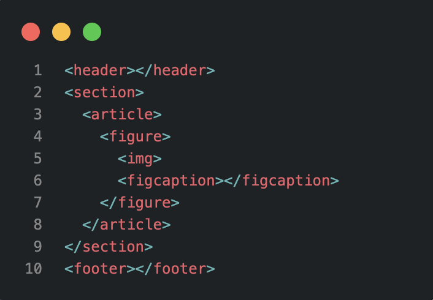
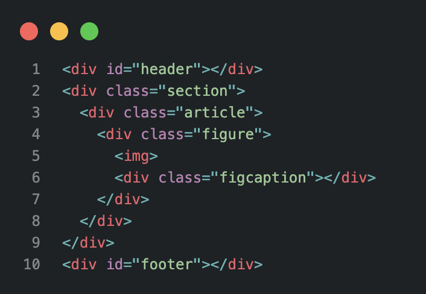
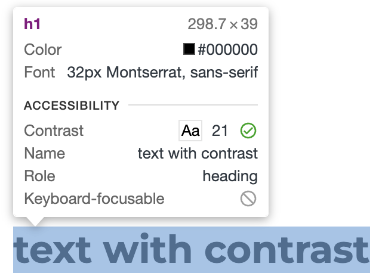
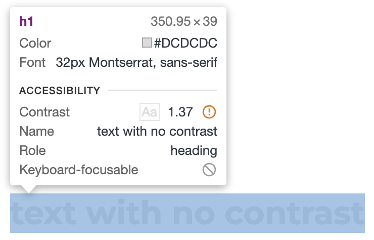
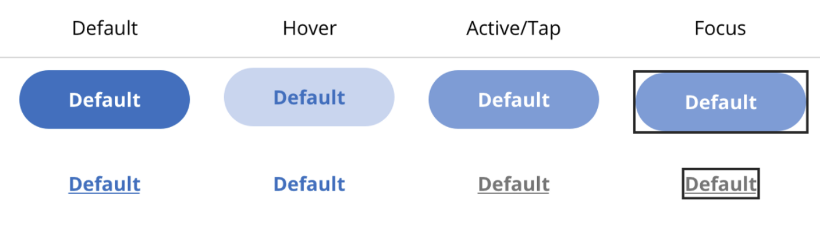
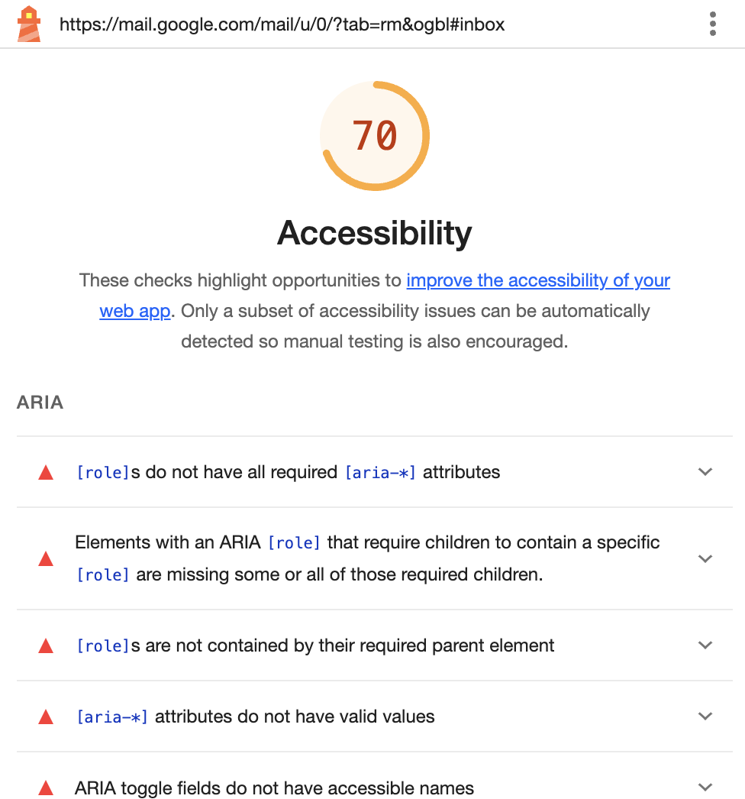

What is accessibility?
Accessibility means making digital content and technology available to all, regardless of their abilities. Prioritizing accessibility creates a more inclusive and user-friendly experience for everyone, not just those with disabilities. It also benefits those with temporary impairments and situational limitations.
Principles of accessibility
POUR

Percivable
Available to the senses(vision and hearing)
Operable
Possible to interact with all controls and interactive elements

Understandable
Try as much as possible to reduce spelling errors and use complex language
Robust
Consistency across different platforms and languages
What developers and designers can do?
-
1. Semantic HTML
Adding semantic HTML tags provides additional information to define roles and importance of page components.
(example of code with semantic tags) (example of code with only div tags) -
2. Colors
Ensure good contrast between colors and make sure to don't just use colors to denote meaning.
(example of text with good contrast) (example of text with bad contrast) -
3. Scalable measures
Do not specify the font size in px, or any other absolute unit of measurement. Prefer relative units like rem, em or even percentage.
-
4. Description
Use the alt and aria-label attributes to add description to images and elements.
-
5. Focus management
When scrolling through a web page with the keyboard, the user should always be able to tell where she is on the page.
(example of button variants) -
6. Use Tools
Use free tools to help you indentify acessibility issues. There are libraries such as ally.js and browser extensions such as ligthouse
(example of lighthouse acessibility analysis)